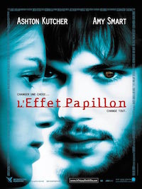
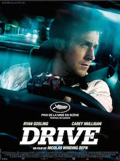

Hasnaa Guessous is actually working as a consultant but she would like to launch her own start-up project
more infos|  |
L'effet papillonUne théorie prétend que si l'on pouvait retourner dans le passé et changer quelques détails de notre vie, tout ce qui en découle serait modifié. On appelle cela "l'effet papillon". Evan Treborn a cette faculté. |
Gone GirlA l’occasion de son cinquième anniversaire de mariage, Nick Dunne signale la disparition de sa femme, Amy. Sous la pression de la police et l’affolement des médias, l’image du couple modèle commence à s’effriter. |
|
|  |
DriveUn jeune homme solitaire, "The Driver", conduit le jour à Hollywood pour le cinéma en tant que cascadeur et la nuit pour des truands. Ultra professionnel et peu bavard, il a son propre code de conduite. |